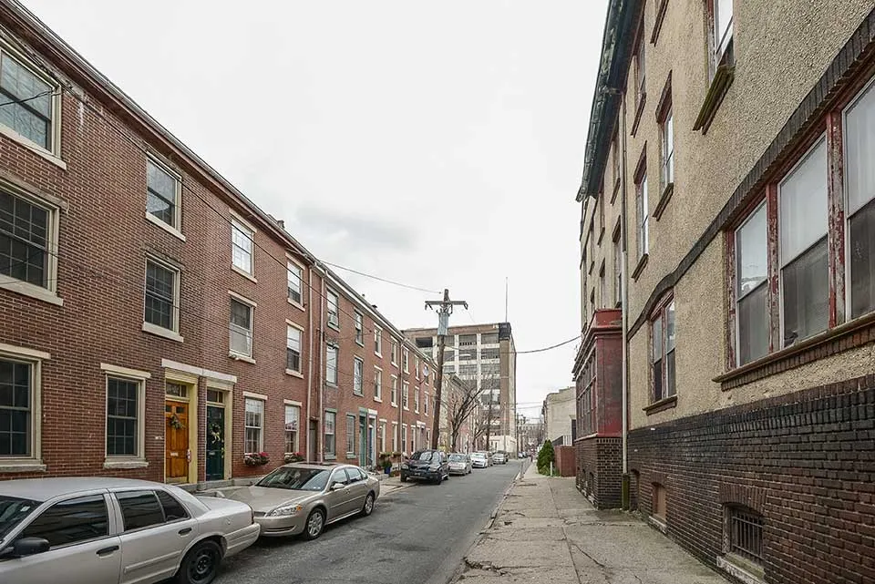
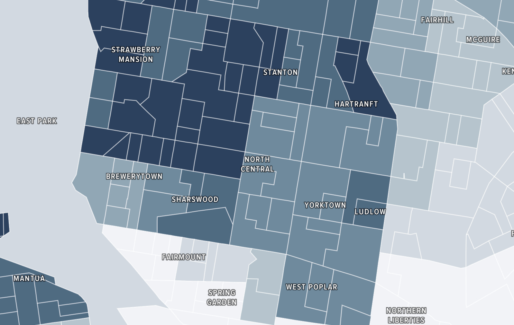
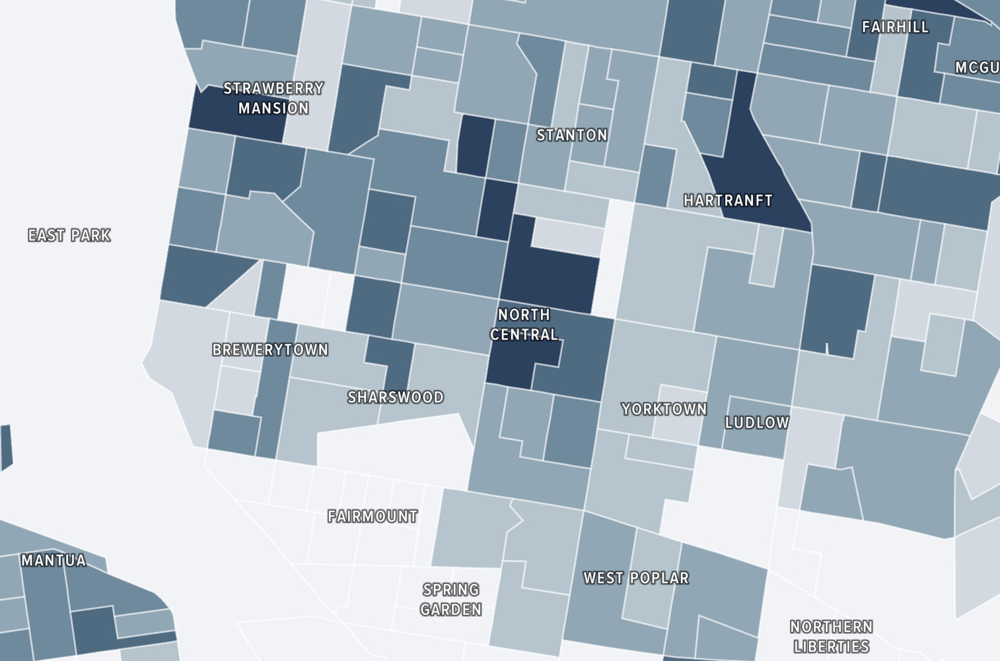

Last October I saw Alex G in concert in Philadelphia at Union Transfer, a smaller venue in Philly’s Callowhill neighborhood. Callowhill sits at a uniquely liminal position in the Philadelphia neighborhood puzzle–just north of Chinatown and the Vine Street Expressway, and just south of the Richard Allen Homes project, a majority Black, affordable housing community. On a broader scale, Callowhill finds itself in the awkwardness that is Philadelphia between Center City and North Philadelphia. In a different life the neighborhood bustled with blue collar worker filled factories. Factory buildings transformed into music venues like Union Transfer and Franklin Music Hall and hip loft-style housing, and more affluent tenants snuffed out the blue collar population.
Union Transfer was a fantastic place to hear my favorite tracks like ‘Hope,’ a song about Alex’s formative young adult experiences in Philadelphia, and ‘Snot,’ my personal favorite. Filled to the brim with concertgoers, the venue got toasty, but I only broke a sweat on the walk to get some pizza afterwards. The jet black roads, cracked cement sidewalks, and weathered brick buildings soaked up heat all day, and the heat lingered long after the sunset. This unusual warmness of the city, formally known as the ‘heat island’ effect, is an issue for all cities, but especially for cities with too few trees.

On top of filling streets with their big green beauty, trees also manage how much of the sun’s rays the ground can absorb, and cool down their soil through evapotranspiration. All this fights off the heat island effect. Trees are even more effective than other ground coverings like bushes or grass. The continued worsening of the heat island effect increases the need for more trees in urban areas.
The issue is poor neighborhoods have less trees than wealthy neighborhoods. Formerly redlined areas–areas that received severely limited real estate investment because the government allowed banks to consider lending to Black people ‘risky’—have fewer environmental amenities to help clean and cool the air, like trees. The city of Philadelphia’s own interactive report on over 100,000 trees visually highlights the disparity. Trees evenly dot Fairmount and other uber wealthy neighborhoods, but run thin just north in Strawberry Mansion where the average household income is over $80,000 lower. And while the distribution is inequitable when considering economic class, trees in Philadelphia also stratify along lines of race—Strawberry Mansion is 98% Black.


Of course, tree disparity matters when talking about defending a community from the heat island effect and shielding sidewalks from harsh sunlight, but it mixes with poor neighborhoods having less access to air conditioning, higher rates of asthma, and higher rates of diabetes to make an unjust cocktail. So while rich neighborhoods walk tree-protected streets, the sun shines harder on less fortunate neighborhoods.
And the sun will only shine harder–over the past 60 years heat waves’ intensity, duration, and frequency grew. This means hotter temperatures for longer and more often, a damning future for low income homes. Though the present is damning as well considering increasing tree cover to 30% could save 400, mostly low-income, Philadelphians from dying prematurely each year. Heat’s deadliness extends outside of cities killing more people than hurricanes, tornadoes, and lightning, and with overall rising temperatures–July 2023 being the hottest month in human history–the death toll of heat will only rise.
To address this issue Philadelphia needs more minds like Erica Fichman, current manager of TreePhilly. TreePhilly offers free street tree installation, grants to host tree planting community events, and tree maintenance for up to a year after planting. These grants for community tree planting events speak to the community building nature of planting trees–creating a sense of place where homeowners walk home and see trees they remember planting.
Luckily Philadelphia recently received 12 million dollars in USDA funding from a massive government grant focused on increasing urban greenery in an equitable fashion. When spending their once in a lifetime sum of money, Philly needs to acknowledge the complex reasons low-income renters and homeowners aren’t already requesting street and yard trees. These include uncertainty around who will care for the tree, who will spend hours dialing every arborist in the phonebook until one finally agrees to prune the tree for thousands of dollars, and who will be responsible for paying to repair sidewalk damage from the roots in 5 years. And Philly needs to prepare a response for when homeowners rightfully ask if their homeownership will be protected from tax hikes from property value increases. This means hiring arborists to prune and care for planted trees, offering sidewalk repair grants, and building policy to protect freshly planted areas from tax hike driven gentrification.
By recognizing and actively addressing systemic barriers to tree access and maintenance, Philadelphia can forge a path toward more equitable urban development and effective use of new USDA funds.